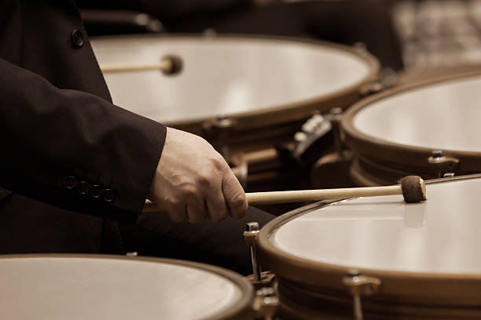

Timpani
Timpani are classified as struck membranophones. They make sound by being hit by a mallet where sound then vibrates off the membrane and bowl of the instrument. Timpani typically come in a set of 4 and each produce a very low booming sound.

Classical Applications
Timpani have a very distinct booming sound that distinguishes them from other low pitched percussion instruments (like the bass drum). This leads to them playing a similar role in having a constant beat for the orchestra. They also have multiple pitches and can be used to define and drive the melody.

Famous Piece
Also sprach Zarathustra is a famous piece for its use in 2001: A Space Odyssey and for its use of timpani. In between each major instrumental section, the timpani plays a bombastic rhythm of notes that leads into the next section.
Fun Fact!
The bowl of the timpani is made out of a sheet of copper. This copper is actually what gives the timpani its unique resonant sound.